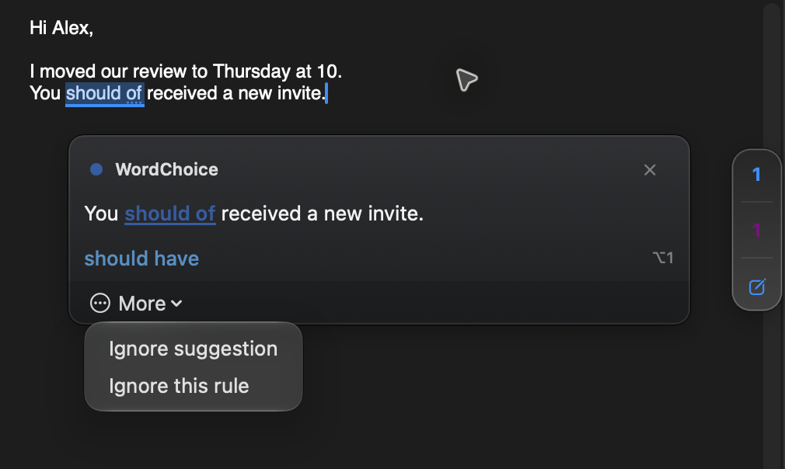
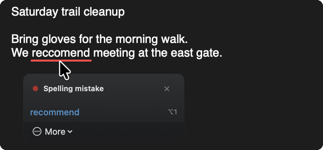
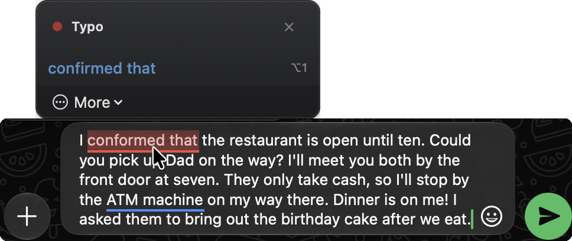
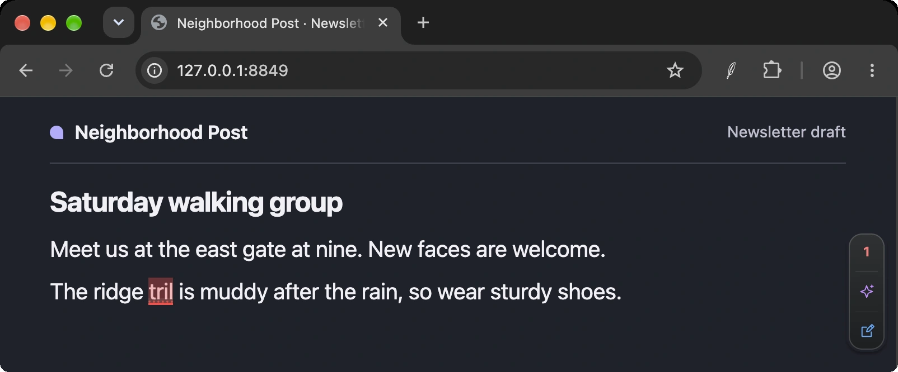
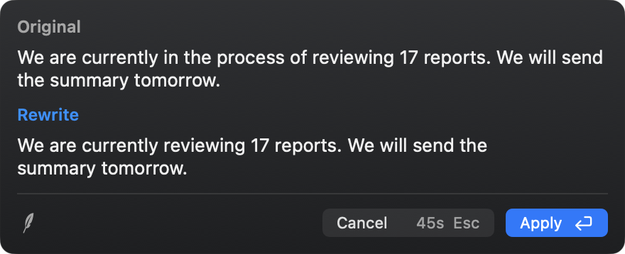
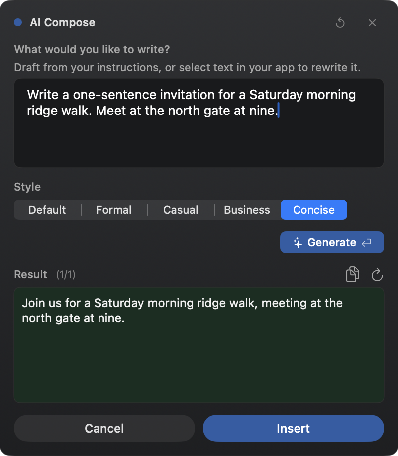
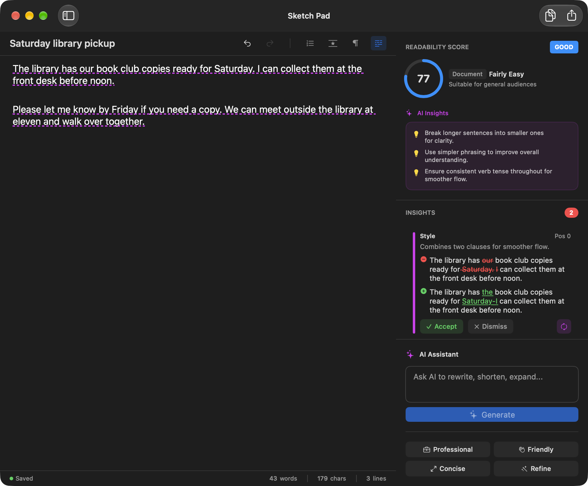
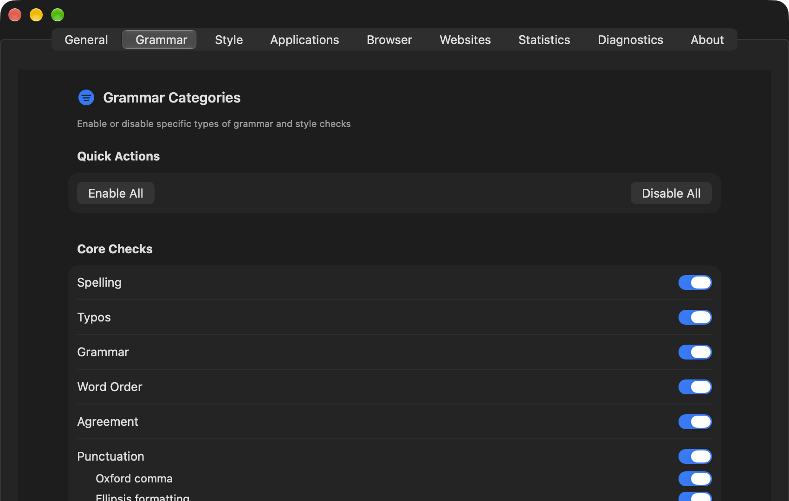
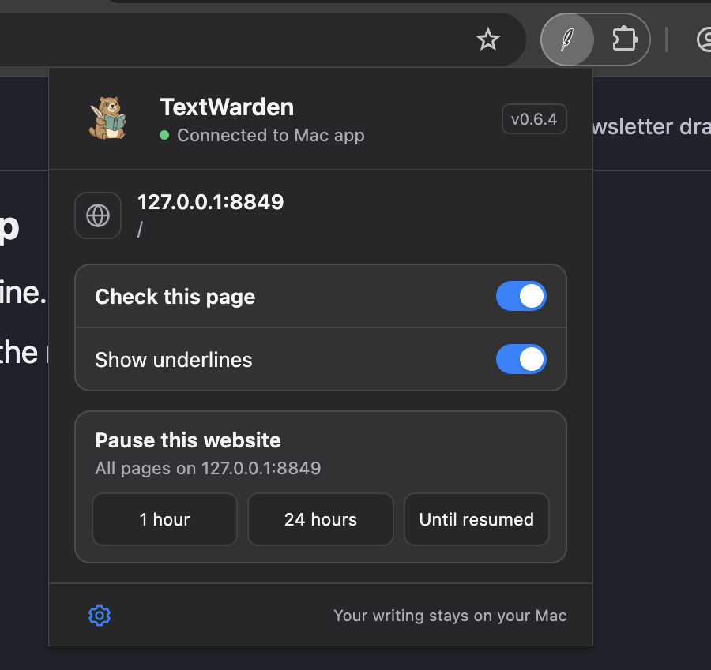
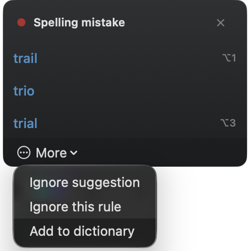

A dictionary that fits
Six built-in word lists cover IT terminology, brand and company names, first names, surnames, internet abbreviations, and Gen Z slang. Switch each list on or off in Grammar preferences and add your own words.
On-device grammar checker
Catch English spelling and grammar mistakes as you type in supported Mac apps. Every check runs on your device, even offline.
macOS 14+ · Intel & Apple silicon

Your Mac checks spelling and grammar even when you’re offline. TextWarden never uploads your draft.
Use TextWarden without an account or subscription. Anyone can read the code on GitHub.
Review suggestions in supported Mac apps with a floating pill and customizable keyboard shortcuts.
Writing tools
Proofread and revise in supported Mac apps.
Hover over an underline to see what TextWarden spotted. Click a suggestion to correct the word or punctuation in place. Use Fix All to apply every edit that has just one suggested correction.
For a faster review, press Control–Option–G to open grammar suggestions, then Tab to accept the current one. You can customize these and other keyboard shortcuts in General preferences.

Color-coded underlines help you tell a typo from redundant wording at a glance. Choose which categories to check in Grammar preferences. The same settings apply across all supported apps.

The TextWarden extension adds inline suggestions to text fields and simple web editors in these browsers. Click the feather in the toolbar to start checking the current page.
Google Docs and other complex editors are outside the preview’s scope.

With AI style checking enabled, select a passage in a supported editor and press Option–Shift–R. TextWarden rewrites it in your preferred style, such as concise or formal. Compare both versions before applying the change.

Open AI Compose from the floating pill or press Control–Option–W. Describe what you want to write, or select a passage first and ask for a specific change.
Choose a tone and generate a draft with Apple Intelligence on your Mac. Review it, then insert it into your editor or copy it.

Open Sketch Pad, TextWarden’s built-in editor, from the menu bar or press Control–Option–N. Your drafts save automatically on your Mac, so you can come back to them later.
Review suggestions beside your text and see how easy it is to read. When you’re ready to share it, copy the draft or export it as Markdown.

Six built-in word lists cover IT terminology, brand and company names, first names, surnames, internet abbreviations, and Gen Z slang. Switch each list on or off in Grammar preferences and add your own words.
Once you’ve written 30 words, TextWarden can score how easy the passage is to read and flag sentences that may be too complex for your audience.
Pause checks in one app, hide its underlines, or exclude a website. TextWarden keeps checking your writing elsewhere.
1 Notion and the Obsidian note editor expose only some text positions to macOS. You can review suggestions in the floating pill even when TextWarden can’t underline a passage.
Choose what gets flagged and how suggestions look.
Choose from five English dialects and fine-tune punctuation rules, including whether to suggest the Oxford comma. For multilingual drafts, choose which of 69 other languages to skip during English checks.

Open the feather menu in a supported browser to show or hide underlines on the current page. You can also pause checking for the whole site.

Open More on a suggestion to ignore it once or turn off the rule. For a spelling issue, you can also add a name or specialist term to your dictionary.

Click the grammar count to review corrections, even in editors that don’t show underlines. With AI writing tools enabled, the purple count opens style suggestions you can accept, reject, or retry. The compose button starts a draft. Drag the pill to a window edge to dock it. In native Mac apps, TextWarden remembers your placement for each app.
Privacy by design
TextWarden never uploads your drafts or prompts. You can keep proofreading with Wi-Fi switched off.
If TextWarden helps you write, you can support its development.
Looking for an alternative to Grammarly or LanguageTool? TextWarden checks English spelling and grammar for free, entirely on your Mac.
Exclusively for macOS 14 or later
Move TextWarden to Applications and grant Accessibility permission to check writing in other apps. In Preferences → About, check for updates manually or turn on automatic daily checks.